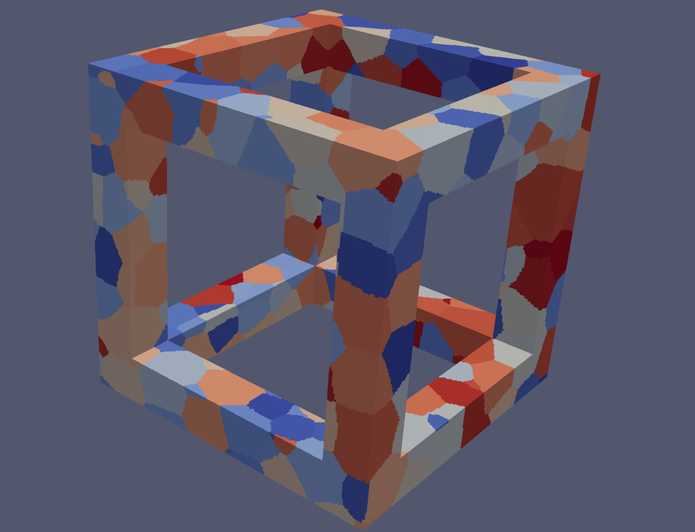

Ultrasonic Scattering and Attenuation
I use the scattering of ultrasonic responses on synthetic microstructures to study. I enjoy working with challenging problems, coding, learning new techniques. I am also an amateur photographer. I enjoy travelling and phtographing widlife and landscapes.
Synthetic Microstructures
DREAM.3D and
Neper are two of the most prominent
softwares for creation of two dimensional and three dimensional
synthetic microstructures.



High Performance Computing
As part of the researcher's community at University of Nebraska-Lincoln I have acess to Holland Computing Center (HCC). HCC is a High Performace Computing center which is based on SLURM. For simulating synthetic microstructures with large number of grains and for numerical calculation of ultrasonic phase velocity and attenuation HCC is super effective.High Throughput Computing
Open Science Grid is a platform dedicated to allow researchers to utilize